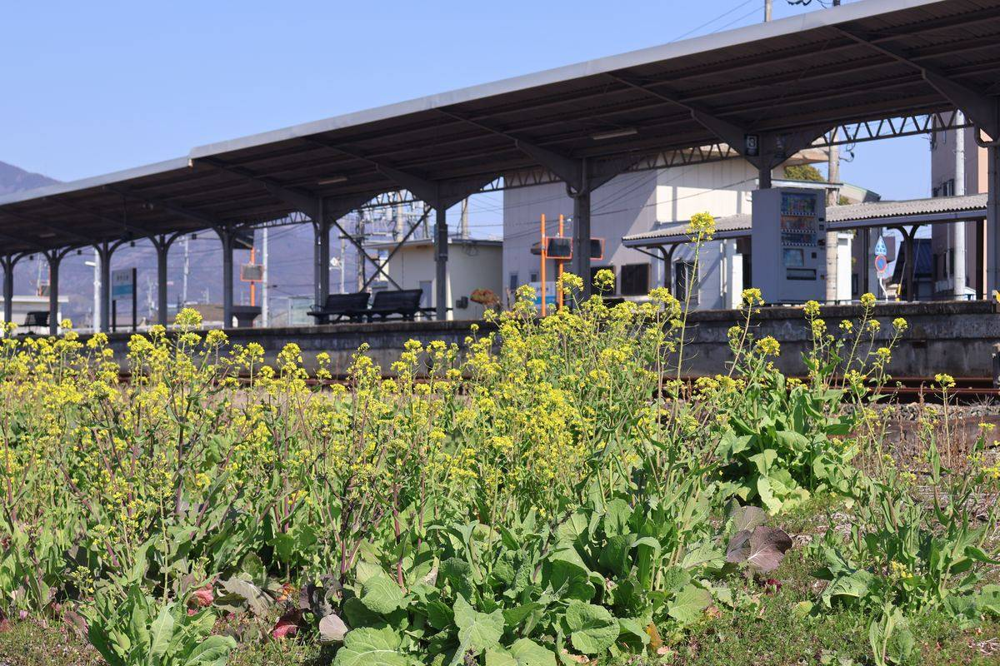

大洲のいま ・ 出典: Wikipedia「伊予大洲駅」・コトバンク「大洲」ほか ・ 約2分で読める
大洲の地名と駅名は「大津」対策？ 由来を調べてみた

 メモう
メモう
大洲の駅、むかしは「大洲駅」だったんだ。あとから「伊予」がついたの。
滋賀の大津とまぎらわしいから、って説があるんだけど、証拠は見つからなかった。
3行でいうと
- 駅は1918年の開業時「大洲駅」で、1933年に「伊予大洲駅」へ変わった
- 地名も江戸時代(明暦・万治年間ごろ)に「大津」から「大洲」へ改められたとされる
- ただし「大津との混同を避けた」説を裏付ける一次資料は見つけられなかった
どっかの鮎 （@AyuDokka49543） ・ 2026年４月11日
Q. 伊予西条のことを「西条」、伊予小松のことを「小松」とかって呼んで、広島の西条とか石川の小松と混乱しないの？
A. 日常会話で広島の西条も石川の小松もまず出ないので全く困りません。よってこの習慣がついている。
地元の人にとっては当たり前でも、外から来た人には気になるポイントらしい。
大洲を「伊予大洲」、西条を「伊予西条」とわざわざ呼ぶのはなぜなのか。Xで見かけたこの投稿がきっかけで気になった。
「他地域との混同を避けるため」という説をよく見かける。でも実際どこまで裏付けがあるのか、 今回はWikipediaや辞典類で確認できる範囲で調べ直してみた。
駅名は1933年に変わっていた。でも理由は書かれていない
まずは駅名から。伊予大洲駅は1918年の開業時、実は「大洲駅」という名前だった。
それが1933年10月、愛媛鉄道の国有化にあわせて「伊予大洲駅」に改称されている（Wikipedia）。ただし、改称の理由を直接説明する記述は見当たらなかった。
ヒントになったのが、同じ時期に「伊予長浜駅」へ改称された長浜町駅。
こちらは「滋賀県の長浜駅と区別するため」という理由がWikipediaに明記されている。
伊予大洲駅も同様の命名慣習（他地域と同じ駅名を避けて「伊予」を冠する）によるものだった可能性はあるが、「大津駅との混同」を名指しした資料までは見つけられなかった。
地名のほうは、江戸時代に「大津」から変わっていた
次に地名自体の由来。コトバンク掲載の『日本大百科全書』『改訂新版 世界大百科事典』『精選版 日本国語大辞典』によると、この土地は近世以前「大津」と呼ばれていたという。
それが明暦・万治年間（1655～1661年ごろ）に「大洲」へ改められたとされている。
ただ、これらの辞典に「なぜ」変えたのかの理由までは書かれていなかった。
「近江や土佐の大津との混同を避けるため」「前の任地『洲本』から一字を取った」といった説もネット上でしばしば見かける。
でもその裏付けとなる一次資料（郷土史の『伊予温故録』など）は、今回オンラインでは確認できなかった。
「呼び方が変わった時期」ははっきり追えても、「なぜ変えたのか」を裏付ける一次資料までは、今回見つけられなかった。
よく語られる「大津対策」説を頭から否定するつもりはないが、確認できていないことは確認できていないと正直に書いておきたい。
郷土史の文献に当たれば裏が取れるかもしれないので、分かる方がいたら教えてほしい。
出典・参考にした資料
伊予大洲駅（Wikipedia） 大洲（コトバンク：日本大百科全書・改訂新版世界大百科事典・精選版日本国語大辞典）きっかけは、どっかの鮎さん（X、@AyuDokka49543）の投稿（2026年４月11日）。ただし投稿本体のＵＲＬはネット上で確認できず、投稿自体も地名の由来を直接説明するものではなかったため、由来については上記２つの資料で別途確認した。
この記事をサイトに掲載した日: 2026/04/25